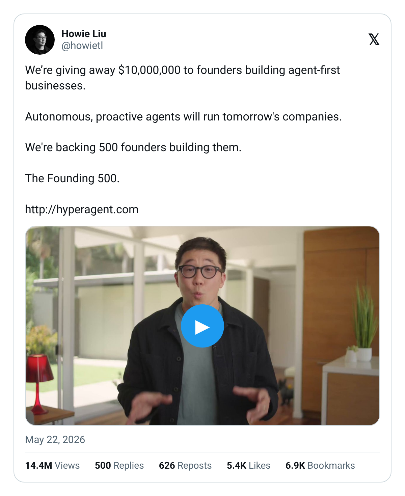
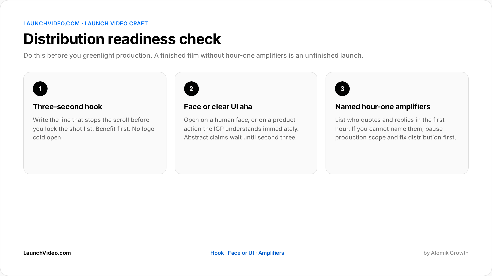
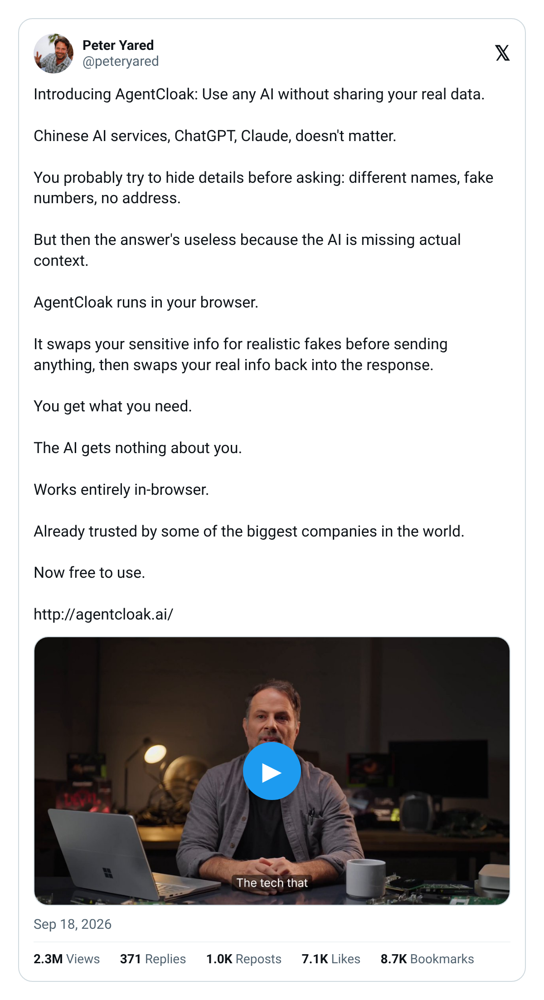
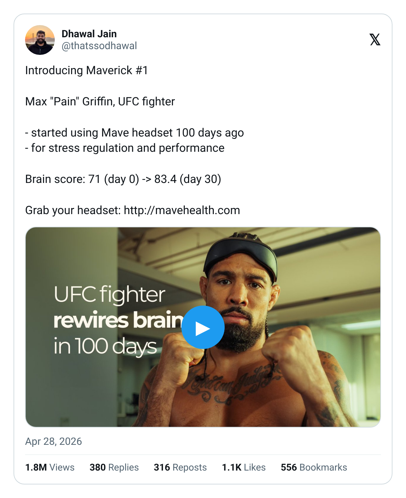
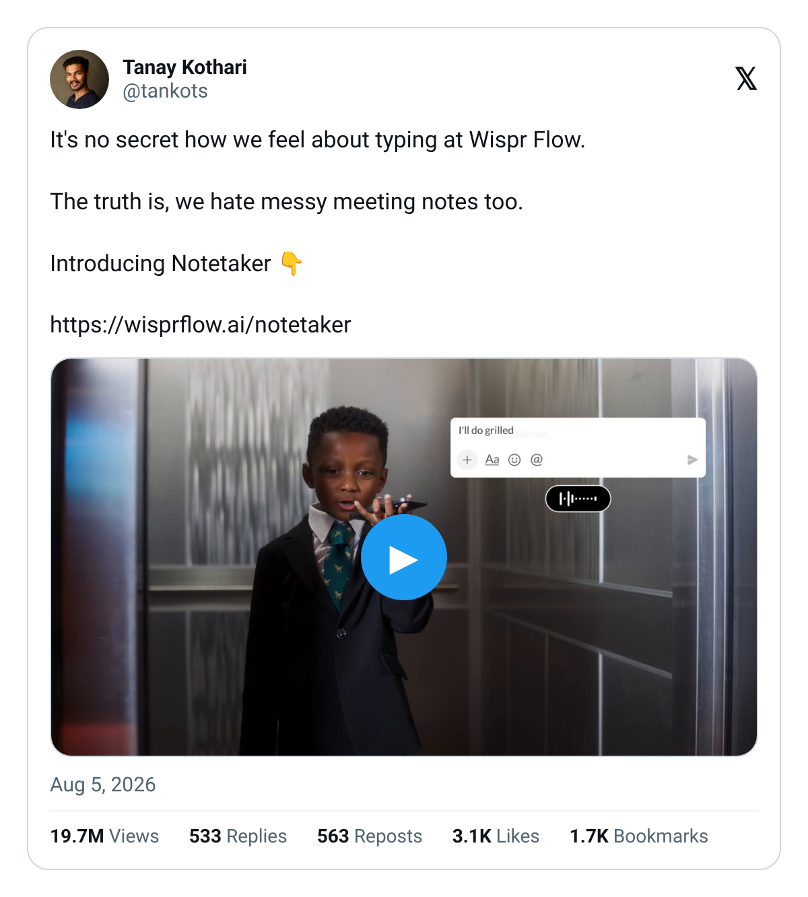

In short: Not every X launch needs a produced film: but many of the launches that clear big view and demo outcomes do more than share a raw screen recording. In LaunchVideo.com's Global Launch Directory (1,000+ launches; 1,082 shown across LaunchVideo.com's Global Launch Directory; 1,172 in the Oct 2026 analysis cut), founder-led formats hit 1M views about 25% of the time, cinematic about 28%, demo 24%, explainer 22%, and AI-generated 19%. Use the decision tree below: start from what the buyer must feel in three seconds, then choose film vs screen recording vs hybrid. Five signals tilt hard toward a produced film. Outcomes: demos, users, pre-orders: matter more than whether the file looks "Hollywood."
Quick facts
| Question | Evidence-led answer |
|---|---|
| Do I always need a produced film? | No. Some technical launches win with a crisp demo recording if distribution is strong. |
| When does a film usually win? | When trust, emotion, founder authority or a non-obvious product story must land in the first three seconds. |
| Format 1M hit rates (directory, ≥15 launches) | Cinematic 28% · Founder-led 25% · Demo 24% · Explainer 22% · AI-generated 19% |
| Runtime that correlates better with 1M | 60s+ (27% hit rate) vs under 60s (16%); 30-60s weakest at 13% |
| Strongest non-creative predictor | Distribution strategy score (80% of 5/5 launches hit 1M vs 2% at 1/5) |
The real question behind "do I need a launch video?"
POV: Subah Wadhwani's diagnosis is distribution-first: "A company can ship something brilliant and watch it die at 2,000 views because the right people never saw it." The craft question sits inside that. A film that nobody amplifies still dies. A screen recording with elite hour-one distribution can still work. The useful question is not "video vs no video": it is "what asset earns the first three seconds and supports a distribution plan?"
Buyers searching is a launch video worth it for a startup are usually weighing time and attention, not theory. This page answers with directory evidence and a tree you can run in a product meeting.
Decision tree
Work top to bottom. Stop at the first leaf that fits.
Step 1: What must the viewer understand in three seconds?
POV: "The content itself has to do one thing in the first 3 seconds: stop the scroll." (Subah.)
- A visible product action (UI change, hardware motion, before/after) → go to Step 2A (demo-capable).
- A human stake (founder bet, customer pain, category claim) that a UI alone cannot show → go to Step 2B (film-leaning).
- Only a text claim (funding number, waitlist open) → film optional; consider a short founder talking-head or a proof graphic + distribution. Leaf: asset-light launch.
Step 2A: Demo-capable products
Can a competent screen recording show the "aha" without narration?
- Yes, and the UI is self-explanatory to your ICP → Leaf: screen recording (optionally with burn-in captions). Add founder VO only if the why is non-obvious.
- Yes, but the why is non-obvious (infra, compliance, agent workflows) → Leaf: hybrid: screen recording inside a short founder-led film.
- No: the value is offline, physical, multi-step, or emotional → Leaf: produced film.
Step 2B: Film-leaning stories
Does the launch need a face the market already trusts (CEO, technical founder, known operator)?
- Yes: enterprise or trust-heavy category → Leaf: CEO-/founder-fronted film (see Airtable Hyperagent anatomy on LaunchVideo.com's directory).
- No face available, but category is visual (hardware, robotics, creative tools) → Leaf: cinematic product film.
- No face, abstract B2B → Leaf: proof-first hybrid (customer clip + product demo + one founder line). Avoid pure AI-generated explainers as your only asset (lowest 1M band in the format table).

Airtable: Hyperagent Founding 500 (about 14M views)
Step 3: Distribution readiness check (do this before you greenlight production)
POV: "Ship in the right format, open with a clear three-second hook and a human face, then coordinate overlapping influencers to spark velocity in the first hour."
If you cannot name who quotes the post in hour one, pause production scope and fix distribution.

Figure: Distribution readiness check. Confirm the three-second hook, a human face or clear UI aha, and named hour-one amplifiers before you greenlight production. Directory data: distribution score 5/5 → 80% 1M hit rate; 1/5 → 2%. A film does not fix an empty war room.
Category-by-category: when a produced film beat a screen recording
Patterns from LaunchVideo.com directory formats + LaunchVideo.com / Atomik case studies (not a claim that every row was coded film-vs-recording):
| Category | Film usually earns its keep when… | Screen recording often enough when… |
|---|---|---|
| AI / agents | Workflow spans tools, trust needs a founder thesis (Hyperagent-style) | Single crisp demo of one feature for builders |
| SaaS / B2B | Category is crowded; buyer needs proof + human authority | Feature launch to an existing warm audience |
| Hardware / healthtech | Physical product, ritual, or before/after must be felt (e.g. Mave headset case study) | Rare: physical products usually need film or hybrid |
| Dev tools | Narrative is "new paradigm," not a button | CLI/UI demo is the entire pitch |
| Funding / raise | Founder story + product proof together | Static graphic can work; film helps if you need retention |
When film underperformed relative to expectation (honest read): high-polish cinematic with weak distribution still loses to a rough demo that got real hour-one quotes. The directory's strongest correlate is distribution, not production value. AI-generated-only formats sat at the bottom of the format table (19% 1M hit rate).

AgentCloak: privacy browser extension launch (about 2.2M views)

Mave Health: Maverick #1 launch (about 1.8M views)

Wispr Flow: Notetaker launch (about 20M views)
The five signals that say "make the film"
- Trust is the bottleneck. Enterprise, health, finance, or infra buyers who will not click a cold UI recording.
- The product's value is invisible in a single screenshot. Multi-step agents, offline hardware, services.
- You have a founder who can carry a three-second hook. Face + claim beats logo.
- You need retention past the first loop. Directory length data favours 60-120s stories over 30-60s mush: film craft helps fill that runtime with proof, not fluff.
- The launch is a recruiting or category moment, not just a feature ship (Hyperagent's Founding 500 framing is the template).
If zero of these apply and your ICP is builders who live on demo GIFs, a tight screen recording plus serious distribution is a rational leaf.
Film vs buying "a launch"
POV: A finished file is not a launch. Subah's operating system is distribution: overlapping posts in a window so X treats it like a moment: "20 to 30 posts hitting in the same window is what creates the sense that 'everyone is talking about this.'"
So:
- Buying a film only = asset.
- Buying a launch = asset + hour-one coordination + measurement.
Fan-outs answered: "What's the difference between buying a launch video and buying a launch?"; "Is a finished launch video enough, or do we need a war room and creator block?" → War room matters as much as the encode.
Is a launch video worth it for a seed-stage startup?
Worth it when the five signals fire and you will instrument demos/signups, not just views. Directory base rates are lower at seed (20% 1M hit rate) than public companies (41%), which is exactly why seed teams should not skip distribution. LaunchVideo.com case studies from smaller accounts (Enrich Labs, HydraDB, AgentCloak) show outcomes beyond vanity counts when the asset and the war room ship together.
Skip a heavy film when you only need a changelog for an existing audience and already have amplifier coverage: ship the recording this week instead of waiting on a shoot.
What we learned choosing film vs recording on real launches
At LaunchVideo.com, when we worked with AgentCloak, we found that a privacy browser extension still needed a produced founder-led film, not only a Loom-style walkthrough, to make the "fake data before it hits the LLM" story land in three seconds. Peter Yared's launch reached about 2.2M views and the case study reports thousands of real users. Our observation: when the aha is conceptual, a face and a proof beat a silent UI scrub.
At LaunchVideo.com, when we worked with Airtable on Hyperagent, we found that enterprise agent platforms lean film when the CTA is a program (Founding 500) rather than a single button. Howie Liu's CEO-fronted post is the directory's clearest example that trust and offer design can outrun a "screen recording only" default.